Chapter 2: Light Guns and Their Family (1970–1985)
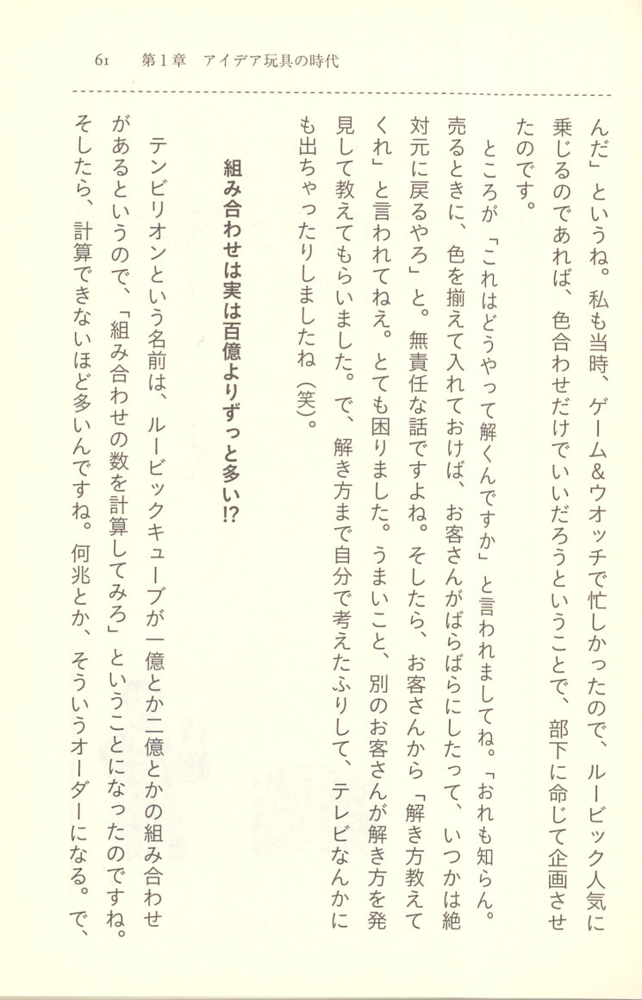
At the time, I was also busy with Game & Watch, so I figured color-matching alone would be enough, and I had my staff work on developing it. When customers would say to me, "How do you solve this thing?" I would tell them, "Just sort the colors and put it back the way it was." That's an irresponsible answer, isn't it? (laughs) So eventually the thing absolutely stopped selling. And when customers would scatter it all around and then ask other customers, "Can you teach me how to solve it?" — and someone would figure it out and show them — and that solution even got broadcast on television. Really quite something. (laughs) And the person who figured it out did it entirely on their own, which is impressive — someone else taught them, they pretended they'd worked it out themselves, and it ended up on TV and all that.
The number of combinations is actually far greater than a billion!?
The name Tenbillion comes from the fact that the Rubik's Cube has something on the order of one hundred million or two hundred million combinations — so we thought, "let's calculate the number of combinations." And it turned out to be an astronomically large number — trillions upon trillions, that sort of order of magnitude. Far too large a number to even calculate properly. Something like tens of trillions. And so,
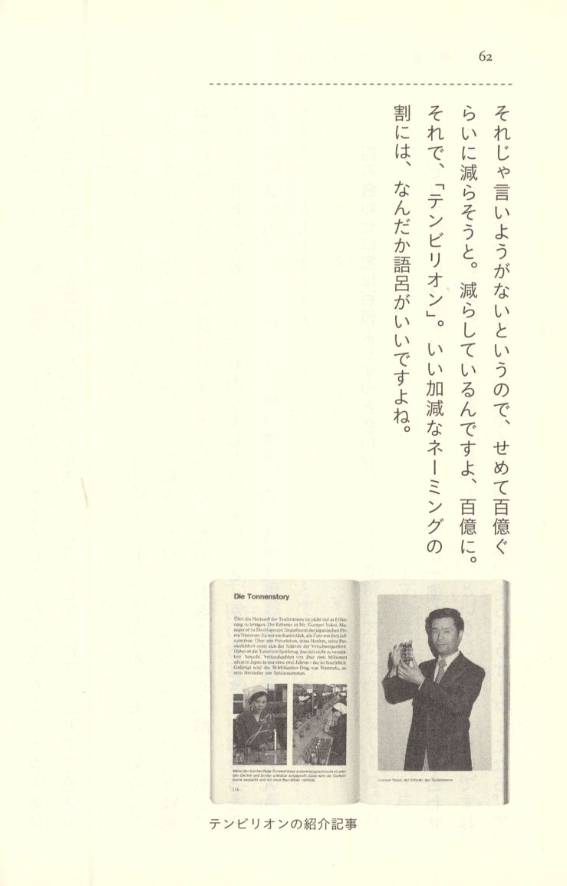
[IMAGE: A magazine article spread in German titled "Die Tonnenstory," featuring a photo of Gunpei Yokoi in a suit holding the Tenbillion puzzle, alongside smaller images related to the product]
*A magazine article introducing the Tenbillion*
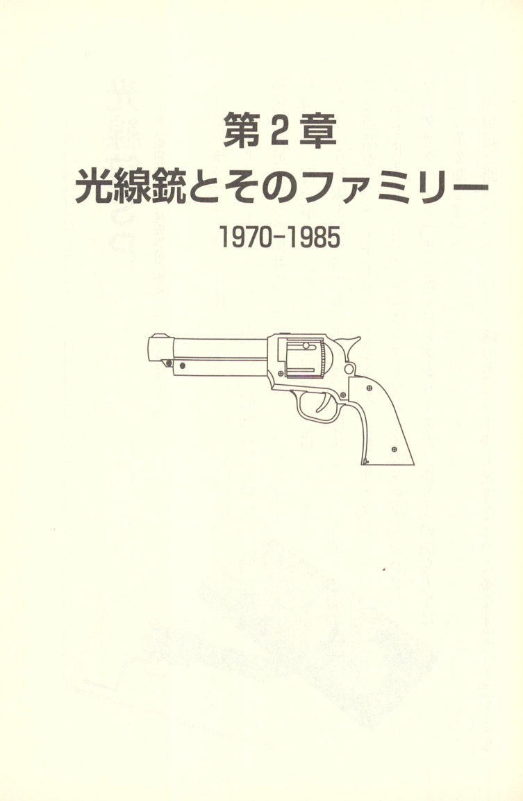
 p.67 光線銃 SP
p.67 光線銃 SP
1970 (Showa 45). Original retail price: ¥980–¥5,900
Having brought the "Ultra" trilogy — Ultra Hand, Ultra Machine, Ultra Scope — into the world, and with his career as a developer sailing smoothly, Yokoi now had a Love Tester under his belt as well. From this point on, the concept behind his work was simple: "commercialize whatever you want." The ray gun was no different — just as a "ray gun" is a straightforward concept, he initially combined the ray gun with the arcade game "Laser Clay" to produce "Wild Gunman," and then continued with the Famicom and ray gun combination into the long-running series "Duck Hunt." Yokoi's career as a developer entered its second golden age.
[IMAGE: The光線銃 SP (Ray Gun SP) toy pistol shown in its retail box, with a cowboy-themed illustration on the packaging]
Open up a ray gun, and you'll find elaborate mechanisms — lasers, light beams, and the like — packed inside.
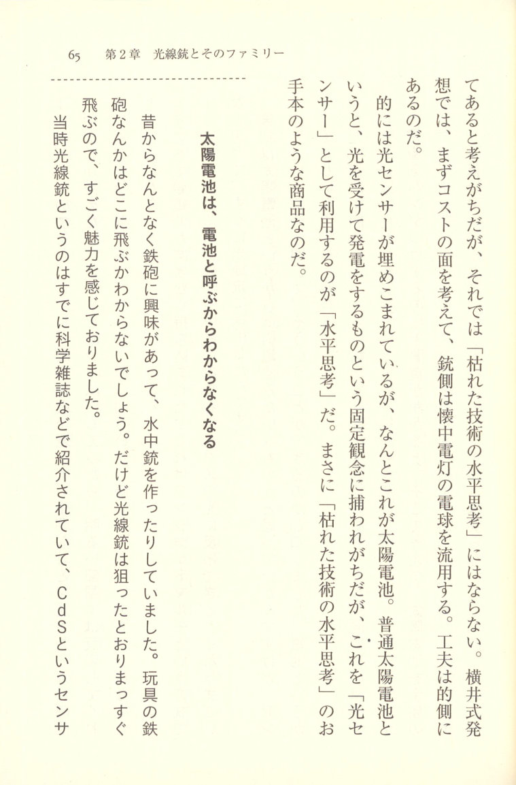
Solar cells: once you call them batteries, you stop seeing them as batteries
Back in the day, I was very interested in cannons, and I made underwater guns and things like that. Toy cannons fly off in all directions, so nobody knows where they're going. But a ray gun flies straight — I found that tremendously appealing. At the time, ray guns had already been featured in science magazines and the like, and CdS — a type of sensor
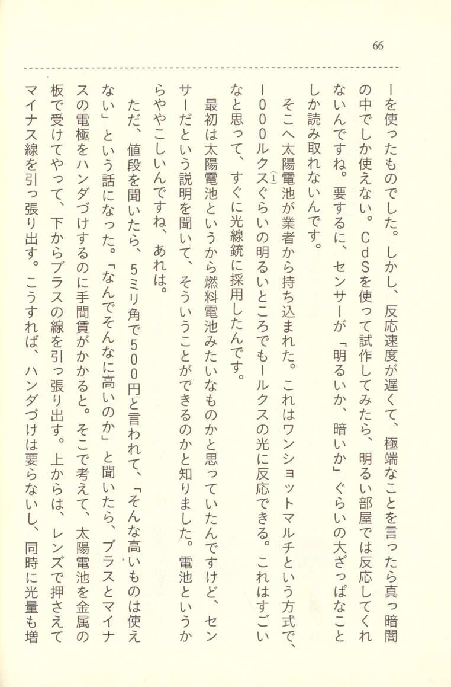
That's where solar cell manufacturers came in and pitched it to me. This uses a one-shot multi-vibrator circuit, which can react to even 100 lux — the brightness of a light gun — anywhere. This is incredible. At first I thought, "It's a solar cell, so it must work like a fuel cell or something" — I had no idea it could function as a sensor. Then I learned that it could, and I thought, "It's a battery — can it really be used as a sensor?"
At first the explanation was a bit convoluted, and I thought, well, it's a solar cell, so it's like a fuel cell — something like that. Then when I actually heard the details, I found out it worked splendidly.
"But," I was told, "at five millimeters square, it costs 500 yen." When I heard that, I said, "Why does something so small cost so much?" Then I thought it over: solar cells have metal electrodes on both the positive and negative sides. Attaching those electrodes by hand takes labor, and that's why it's expensive. So I figured — you run the positive lead out from the top by pressing a lens against it to also boost the light intensity, and you pull the negative lead out from the bottom. That way, soldering becomes unnecessary, and at the same time the light volume increases —
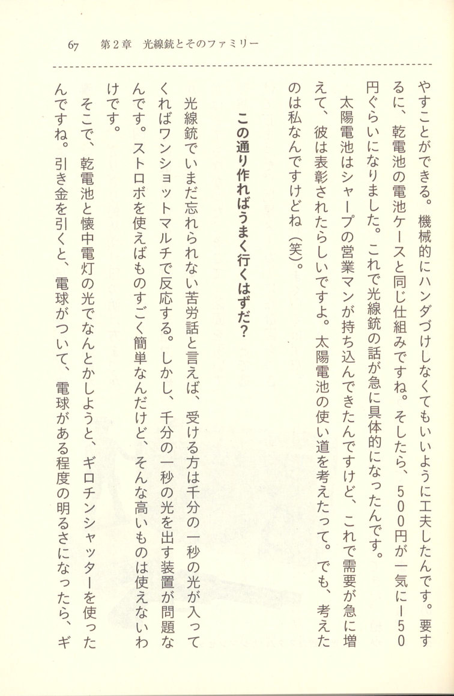
If you build it this way, it should work perfectly.
To be candid about the struggles that still go unrecognized with the light gun: the receiving end gets a thousand-of-a-second's worth of light coming in, so the device that emits one-thousandth of a second of light is the problem. A one-shot multivibrator reacts to it. But a thousand-of-a-second is extremely high — things like that can't be used. So, using a strobe would make it absurdly simple, but —
There, I tried using a dry-cell battery and a flashlight. With just a battery and a flashlight, when you pull the trigger, the bulb lights up, and once the bulb reaches a certain brightness — I used a guillotine shutter — and when it does, the gyro —
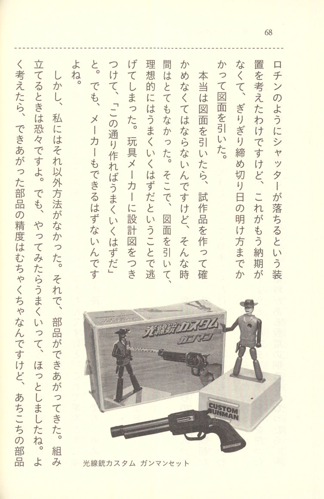
But I had no other method. So the parts came together, and I was relieved. The assembly went smoothly too — and then I breathed a sigh of relief. But the precision of the parts from various places was just terrible,
[IMAGE: Photo of the 光線銃カスタム ガンマンセット (Custom Light Gun Gunman Set) — a boxed toy set featuring a pistol-shaped light gun and a standing cowboy/gunman target figure, with the product box visible behind them]
and when I thought about standing them all up, I was terrified. But still, once we tried it, it worked out fine, and the parts that came together — well, the precision was absolutely awful, but
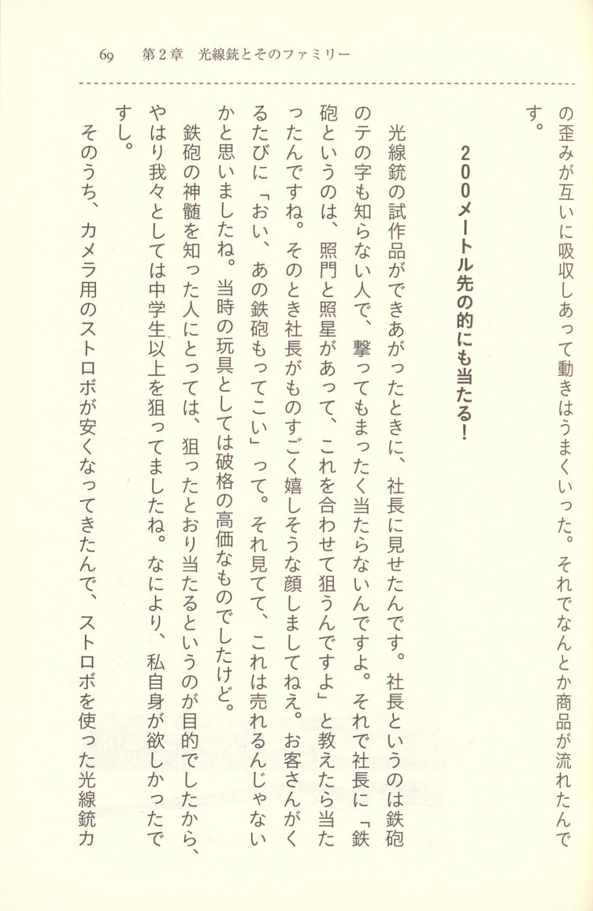
It hits a target 200 meters away!
When the prototype of the light gun was completed, I showed it to our company president. Now, the president was someone who didn't know a thing about guns. He was completely oblivious to guns, so when I showed him the prototype, the president looked at it with an expression that said he had no idea what he was supposed to be aiming at. So I told him, "It's a cannon — it hits a target 200 meters away!" And the president looked absolutely delighted. "Oh, that's wonderful!" he said. And when the gate and the star on the gatehouse lined up just right, that's when you fire — and the company president was very pleased indeed.
"Hey, bring that cannon over here," he said. At the time, as a toy it was quite expensive, but for our customers it was something they'd gladly pay for — that was the idea. And yet, what we at Nintendo actually wanted to do was aim for middle-school level and above. More than anything, it was because I personally wanted a strobe-based light gun camera — strobes for cameras had gotten cheap, and using a strobe-powered light gun
 p.73 meant there was no mechanical modification needed at all — the light source itself was what I used to make the custom. I was honestly amazed at this myself: a strobe's light reaches up to 200 meters. At the Tokyo branch's product presentation, held in a building in broad daylight, I placed a target in a building 200 meters away across the street — and I hit it beautifully. Everyone was astonished. I was pretty surprised myself.
p.73 meant there was no mechanical modification needed at all — the light source itself was what I used to make the custom. I was honestly amazed at this myself: a strobe's light reaches up to 200 meters. At the Tokyo branch's product presentation, held in a building in broad daylight, I placed a target in a building 200 meters away across the street — and I hit it beautifully. Everyone was astonished. I was pretty surprised myself.
(1) The unit of illuminance. For reference, the illuminance of a television studio is approximately 1,000 lux, and the light of the moon as seen from the ground is approximately 1 lux.
[IMAGE: Product box and rifle for the light gun custom "Lever Action Rifle" (光線銃カスタム レバーアクションライフル)]
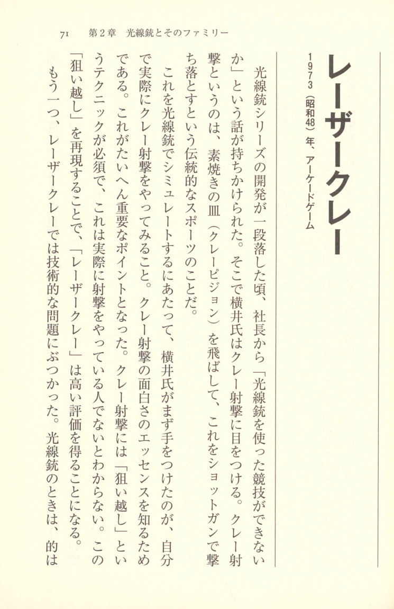
1973 (Showa 48) — Arcade Game
Around the time development of the light gun series was winding down, the company president approached Yokoi about competitions that couldn't be done with a light gun. He was drawn to clay shooting, and sent Yokoi off to look into it with instructions to shoot clay with a shotgun.
The story that came back was this: clay pigeons — the traditional sport's fired clay discs (crêpissons) — could be shot down with a light gun by simulating the shooting experience. To actually carry out the simulation, Yokoi's first order of business was to understand the essence of clay shooting. He discovered that the key point is "leading the target" — and that people who actually shoot don't realize they're doing it. This technique is crucial; by reproducing the "leading" shot, the Laser Clay gains high acclaim. When using a light gun, the target
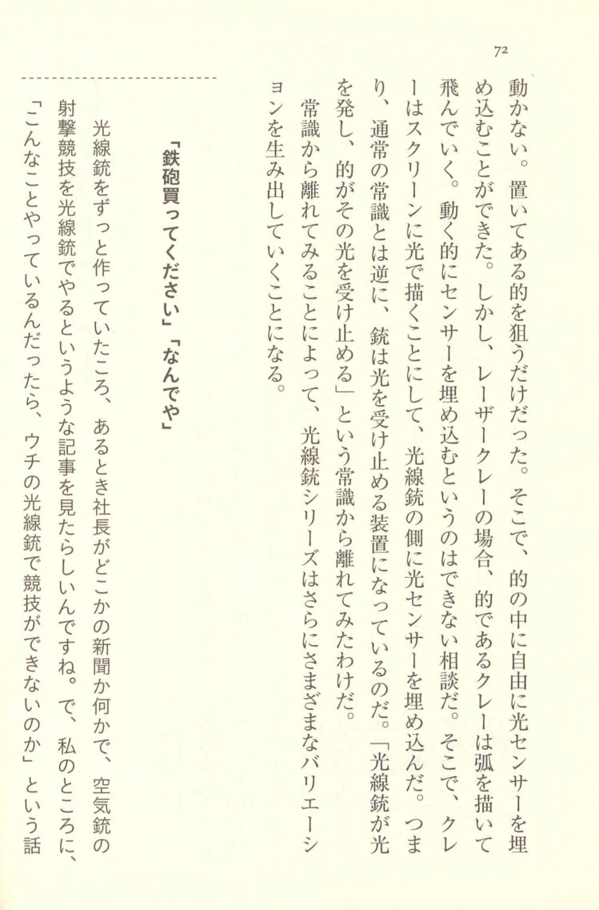
"Buy me an air rifle." "What for?"
While continuing to build light guns, the company president one day saw an article in some newspaper somewhere about air rifles, and came to Yokoi saying, "It seems air rifle shooting is popular. So tell me — why can't our light gun be used for competitive shooting?"
"If someone is doing that sort of thing, our light gun could be used for competitions too" — that was the gist of it.
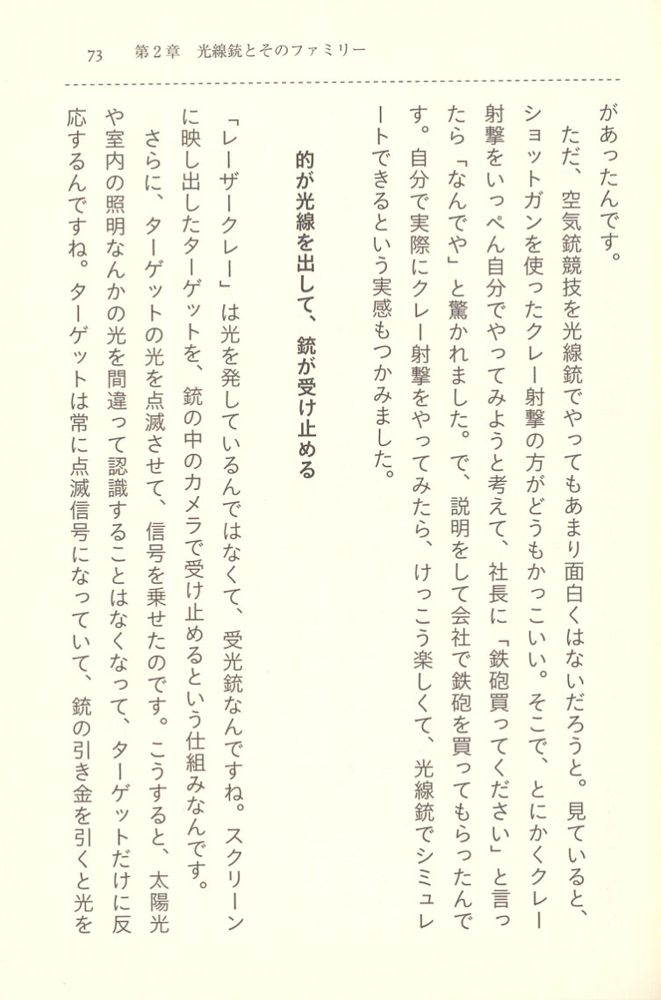
The target emits light, and the gun receives it
"Laser Clay" is not emitting light — it is a light-receiving gun. The screen projects the target, and a camera inside the gun receives the light — that is the entire mechanism. What this means is that sunlight and the room's ambient lighting no longer interfere, causing the target's light to be mistaken for something else. With this setup, only the target's light is reflected back. The target is constantly flickering — it becomes a blinking signal — and when the gun's trigger is pulled, the light
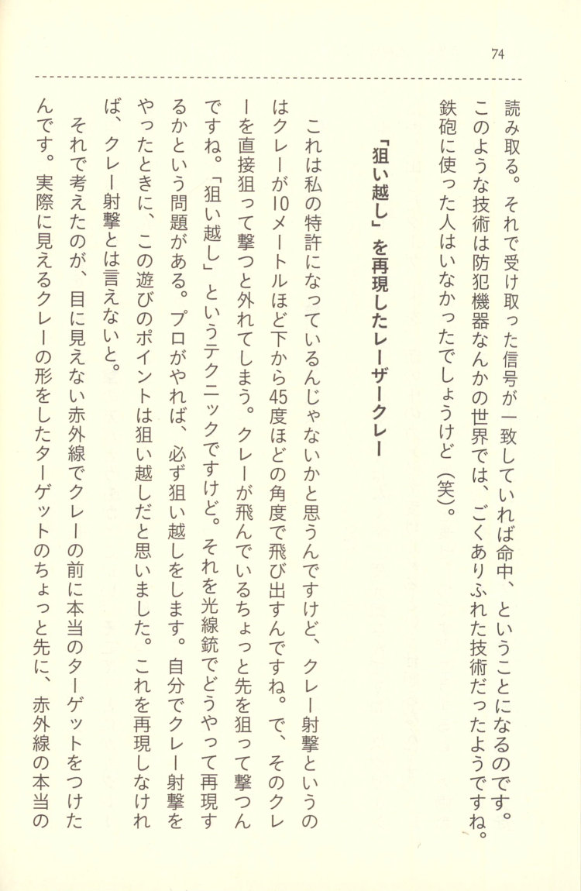
The Laser Clay that Reproduced "Shooting Past"
This is actually my patent, I believe. In clay shooting, the clay flies out from about 10 meters below and 45 degrees away — that's how it goes. And the clay flies up and away from you. The thing is, what clay shooting is all about is that you aim just ahead of it and shoot — you lead the target. There's a technique called "shooting past," and that's the key point of this game. If you can pull it off, you'll always shoot past the target, I thought. So I wanted to reproduce clay shooting on my own, but there was a problem. The "shooting past" technique means you're aiming and firing slightly ahead of the clay with the light gun, so the clay ends up getting hit just beyond where it actually is. To reproduce this, the visually visible clay — the target made to look like a clay — had a real target placed just in front of it, and just beyond that, the actual
 p.78 [IMAGE: Diagram showing the "shooting past" mechanism — an arc trajectory with an infrared target and shotgun reception range marked ahead of the clay pigeon image (クレービジョンの映像), with a caption reading "The shooting past mechanism — an 'invisible target' flies just ahead of the visually visible target"]
p.78 [IMAGE: Diagram showing the "shooting past" mechanism — an arc trajectory with an infrared target and shotgun reception range marked ahead of the clay pigeon image (クレービジョンの映像), with a caption reading "The shooting past mechanism — an 'invisible target' flies just ahead of the visually visible target"]
infrared target was placed so it would be hit just right when you shot past. This technique was very well received, and people said they actually wanted to use it to practice clay shooting. That is how clever this design was.
Regarding Laser Clay, there is one more thing to explain about Yokoi's work: it became a landmark product in his career as a game creator. This Laser Clay was built on an enormously large scale. Rather than placing the machines in a corner of a bowling alley or similar venue, it took over an entire wide floor as an indoor Laser Clay range. It was essentially a room-sized laser clay shooting experience. Yokoi himself later said, "It wasn't simply a game" — meaning he understood it not as a mere game but as a full-scale sport. That was his intention in bringing it to life. Consequently, his aim was to establish it as a large-scale arcade game —
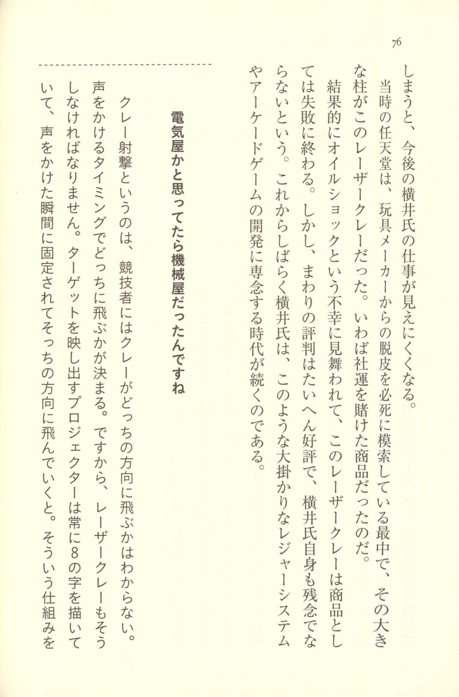
"I thought it was an electronics shop, but it turned out to be a machine shop"
Clay shooting, you see, is a sport where competitors have no idea which direction the clay will fly. So the Laser Clay projector constantly traced a figure-eight pattern, and the moment you called out, it would lock onto the target and send it flying in that direction. That's how the system worked —
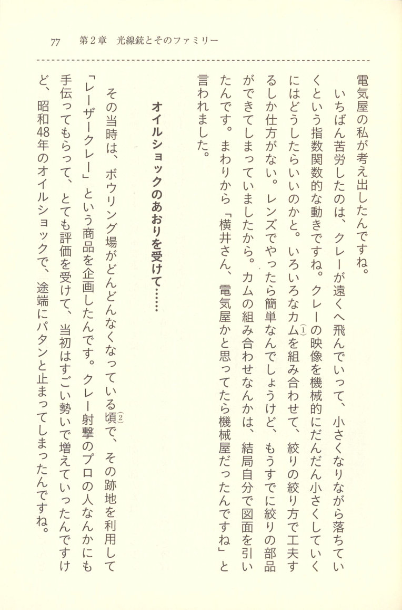
Caught in the wake of the oil shock…
Around that time, bowling alleys were closing down one after another, and we planned a product called "Laser Clay" to make use of those sites. Clay shooting professionals and others would come, and at first it was gaining popularity at a remarkable pace — but then the oil shock of 1973 hit, and it came to an abrupt halt midway through.
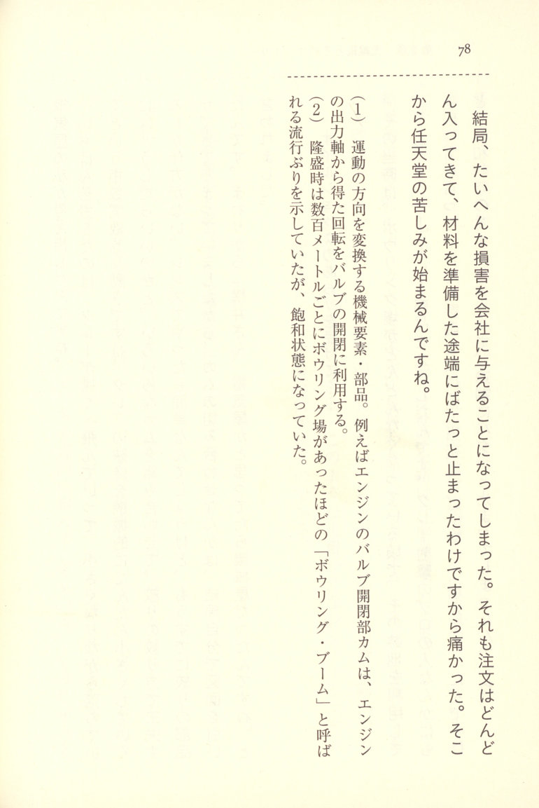
(1) Mechanical elements and components for changing the direction of movement. For example, the valve timing cam of an engine uses the engine's output shaft rotation to open and close the valves.
(2) During the peak period, there were bowling alleys every few hundred meters, which showed just how popular the "bowling boom" had been — but it had reached saturation.
 p.82 **Wild Gunman** — Arcade Game, 1974 (Shōwa 49)
p.82 **Wild Gunman** — Arcade Game, 1974 (Shōwa 49)
The Laser Clay was well-regarded, but the Oil Shock compounded the damage it inflicted on the company. And the Nintendo products that came before it were, at the end of the day, toys — items priced under 10,000 yen. Laser Clay, by contrast, was a large-scale leisure facility, and this failure was of a different order from anything in the toy business. For Nintendo, it ushered in a painful era that would continue right up until Game & Watch arrived in 1980.
After this, Laser Clay became a major undertaking for Nintendo — yet it remained, in the end, a product of the company's kitchen, so to speak. Even as developer Gunpei Yokoi went on to create one acclaimed arcade game after another, he would say, with characteristic understatement, "Those were tough times." Among our readers, there are surely some who will look at those titles and think, "Oh — *that* game!"
[IMAGE: Advertisement flyer for arcade products, showing "WILD GUNMAN" and "SHOOTING TRAINER" cabinet machines, with text describing the Nintendo Leisure System — labeled as a trade/business-use flyer]
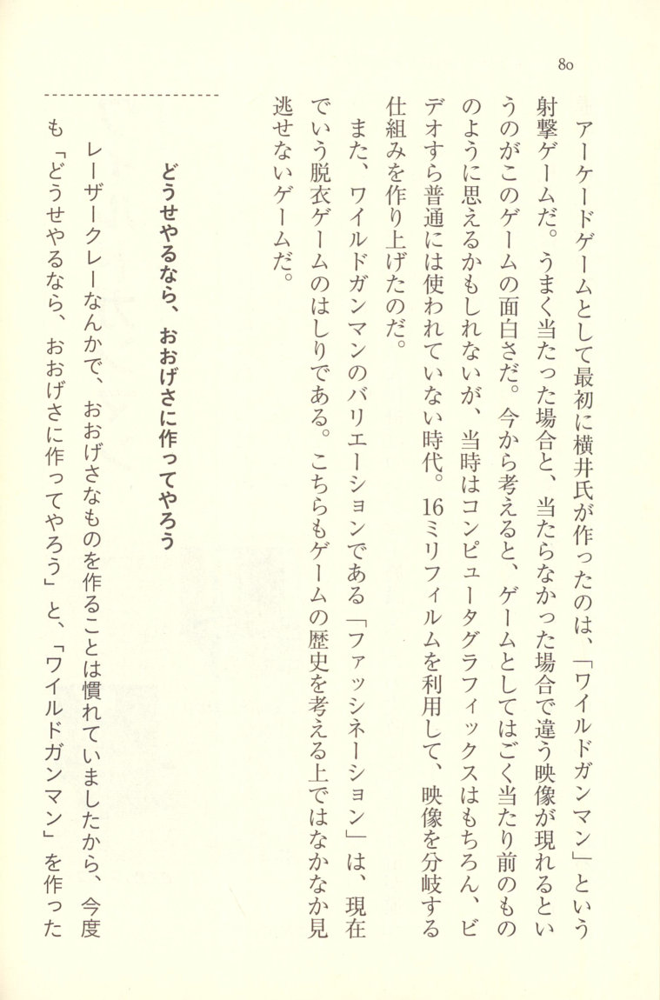
If you're going to do it, do it big.
Since working with Laser Clay had accustomed him to making things on a grand scale, this time around he made Wild Gunman on an equally grand scale.
"If you're going to do it, do it big," and so, "If you're going to do it big, go even bigger" — that was the spirit with which he made Wild Gunman.
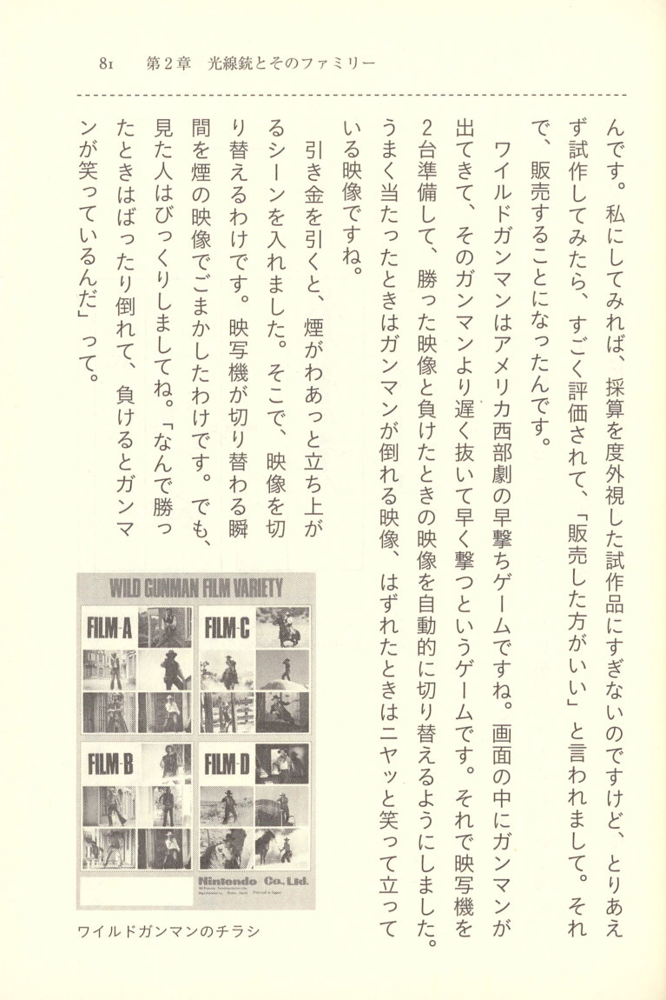
Wild Gunman was a quick-draw game set in the American West. Gunmen appeared on screen, and the game was designed to automatically switch between the footage of when you shot faster than the gunman and when you didn't — the footage showing the gunman going down when you won, and the footage showing the gunman firing first when you lost. We had two units prepared, and Wild Gunman performed better than expected.
When you pulled the trigger, smoke would rise and the gunman would fall — that's what made the game so appealing. So we arranged for the projector to switch footage at the moment the smoke appeared. The instant the footage switched, you could see the projector cutting away — that was a giveaway. But even so, the people who watched would be surprised, saying, "Why does the smoke—?" And when they lost, the gunman would grin and laugh — that got people laughing too.
[IMAGE: A promotional flyer for Wild Gunman showing four film variety panels labeled Film A, Film B, Film C, and Film D, each containing multiple frames of Western gunfighter scenes. The Nintendo Co., Ltd. logo appears at the bottom.]
*A Wild Gunman flyer*
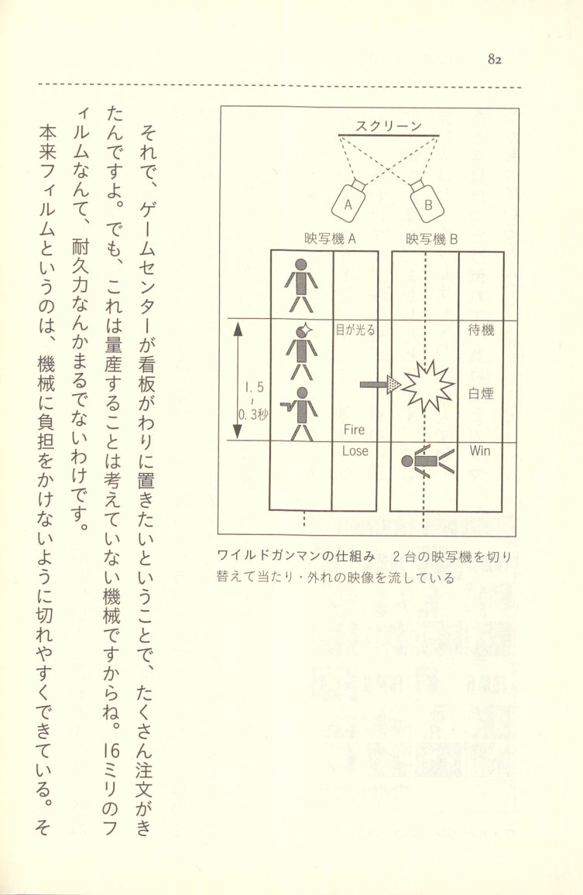
*The Wild Gunman mechanism — two projectors switch between hit and miss footage*
So, the game centers were looking to use it as a signboard, you see, meaning we got a lot of orders. But this was a machine never intended for mass production. The 16mm film — film isn't designed to take mechanical strain, so it's made to be easy to cut. And that's exactly the problem —
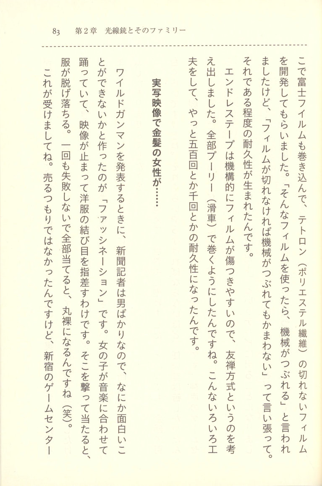
The blonde woman in the live-action footage…
When Wild Gunman was unveiled to the press, all the reporters were men, so they wanted something entertaining to happen. We made what you might call a "fashion show" — a girl dances in time to the music, and when you shoot her, her clothes fall off. No matter how many times you fail, all her clothes come off properly — she ends up completely naked, right there in Shinjuku's game center. (Laughs.) That's what people responded to, you see. We weren't planning to sell it, but Shinjuku's game centers —
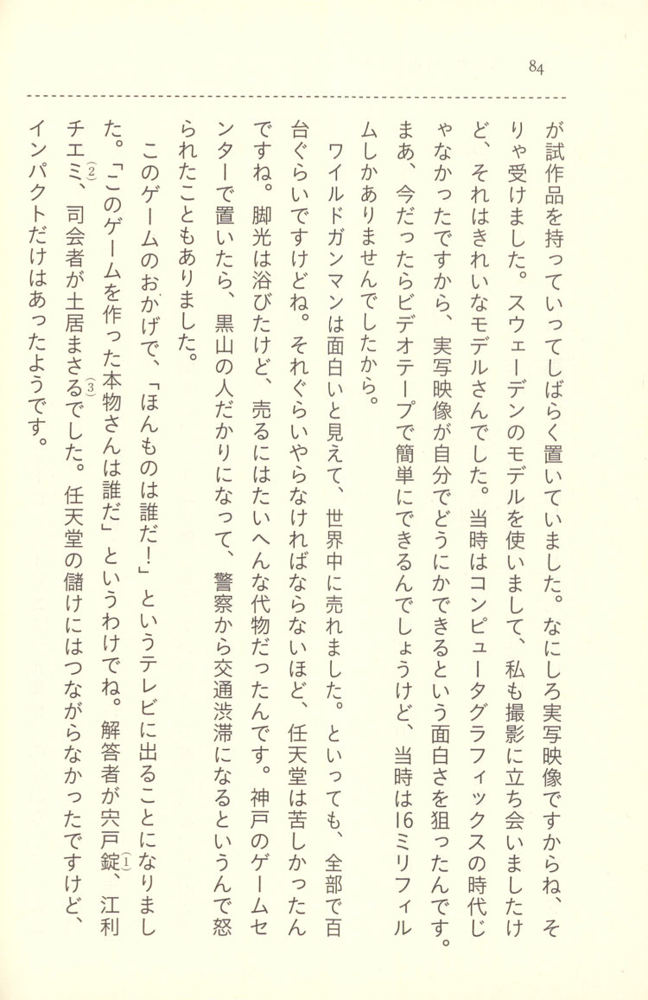
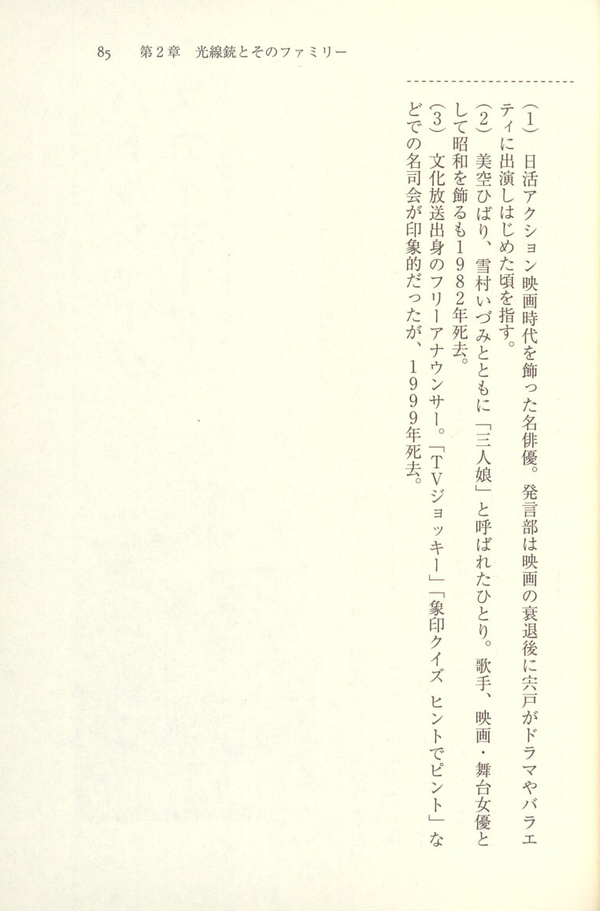
(2) Misora Hibari, Yukimura Idzumi — one of the trio known as the "Three Young Stars." A singer, film actress, and stage actress. Died in 1989.
(3) A freelance announcer who started out at a cultural broadcasting company. Known for programs such as *TV Jockey* and *Zōjirushi Quiz: Hint de Pinto*. Died in 1999.
 p.89 Battle Shark, Sky Hawk
p.89 Battle Shark, Sky Hawk
1977 (Showa 52), Arcade Game
Wild Gunman is an arcade game — or so the story goes, though in truth it was not an official product but rather a prototype. It received such a favorable reception that they decided to sell it commercially, and what they produced next were "Battle Shark" and "Sky Hawk." Both games fall into the category of what would now be called "shooting games," and a notable feature of both is their use of live-action footage. In the present day, the ability to run live-action footage on a computer is unremarkable, but at the time, arcade centers were still using 16mm film — anything beyond that was out of the question. In terms of live-action footage, you could say it was still the age of Inbader (①
[IMAGE: Arcade cabinet promotional flyer for Battle Shark, showing dramatic naval battle artwork with the Nintendo BATTLE SHARK logo]
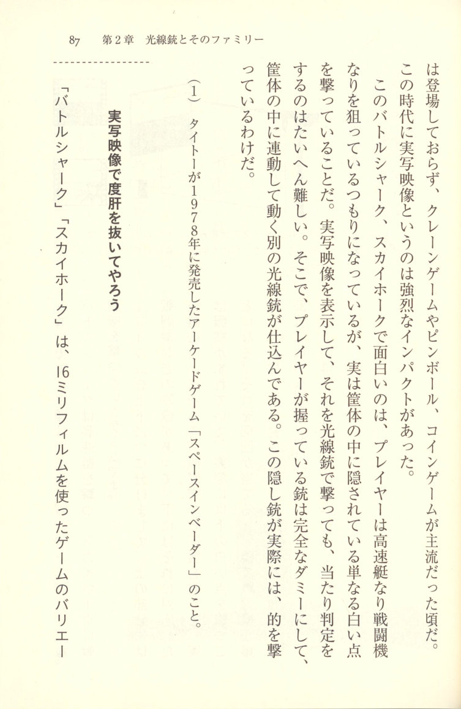
What makes these games interesting is that the player is supposedly aiming at a high-speed naval vessel or fighter plane, but the gun the player is holding is a complete dummy. The live-action footage is displayed on screen, and no matter how the player fires at it with the light gun, it always registers as a hit. The trick is that hidden inside the cabinet, moving independently, is a separate light gun that does the actual firing.
Giving Live-Action Footage Some Real Punch
① Refers to "Space Invaders," the arcade game released in 1978.
"Battle Shark" and "Sky Hawk" are variations on the 16mm film-based game format —
 p.91 [IMAGE: Diagram showing the internal mechanism of Battle Shark, illustrating how mirrors split the film image into upper and lower halves to handle hit detection and footage switching]
p.91 [IMAGE: Diagram showing the internal mechanism of Battle Shark, illustrating how mirrors split the film image into upper and lower halves to handle hit detection and footage switching]
the principle being the same as Wild Gunman and Sky Hawk. Battle Shark is a game where you shoot at a high-speed naval vessel and fighter planes. The film is split into two halves: the upper portion shows footage corresponding to the fighter planes, while the lower portion has footage for the machine gun to target. There is a white dot somewhere in the fighter plane footage. In practice, when you aim the machine gun at the white dot in the lower image, a mirror causes the fighter plane in the upper image to explode — that's the mechanism. When you fire at this exploding footage several times, it cuts to the next image. The explosion footage is what gets spliced into that section. Around this time, the thinking was, "Let's really knock their socks off with live-action footage" —
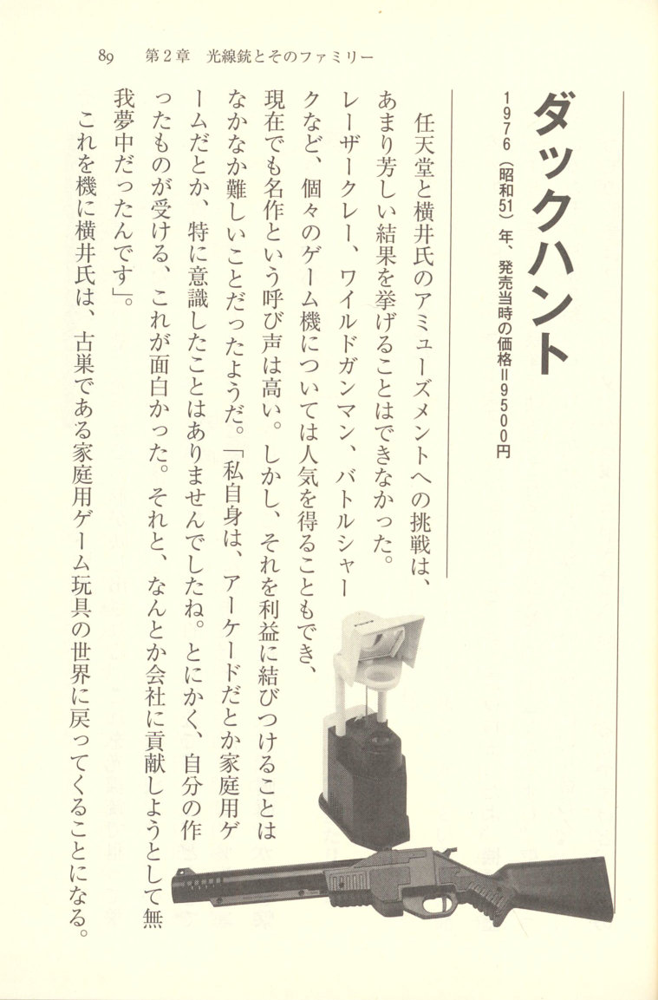
Duck Hunt
*1976 (Showa 51). Price at time of release: ¥9,500*
[IMAGE: Photograph of the Duck Hunt light gun game, showing a shotgun-style controller aimed at a target stand with a screen]
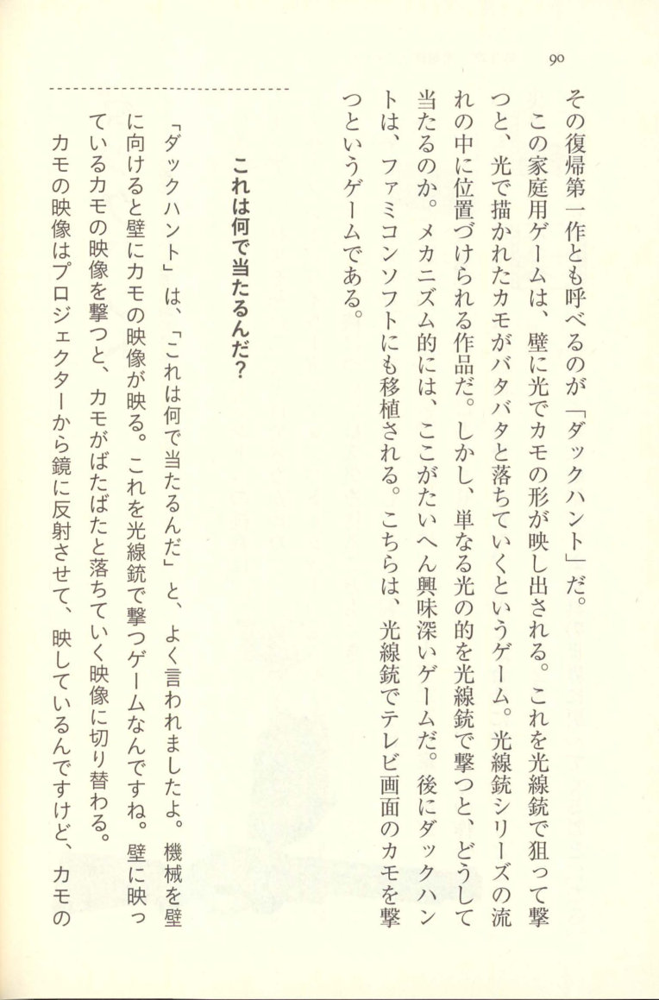
What exactly do you hit?
"Duck Hunt is often called 'What do you hit?' — meaning, what's the target when you play a light gun game like this? The machine projects an image of a duck onto the wall. You shoot the duck's image with the light gun, and the image switches to one of the duck flapping its wings and falling. The duck's image is projected from a projector, reflected off a mirror,
 p.94 and back to the light gun, where the light gun's own light is added. That light travels back via the mirror to the projector's one-shot multi-sensor. So the hit detection is done right there at the projector. Next to the projector, you see, there's a one-shot multi-sensor. That's where the hit is judged. We built a custom light gun setup using this sensor. The strobe light has more than enough power — it can reach 200 meters, so the idea of harnessing that power was the inspiration behind it all."
p.94 and back to the light gun, where the light gun's own light is added. That light travels back via the mirror to the projector's one-shot multi-sensor. So the hit detection is done right there at the projector. Next to the projector, you see, there's a one-shot multi-sensor. That's where the hit is judged. We built a custom light gun setup using this sensor. The strobe light has more than enough power — it can reach 200 meters, so the idea of harnessing that power was the inspiration behind it all."
[IMAGE: Diagram showing the Duck Hunt mechanism — light fired from the gun reflects off a mirror and reaches the sensor (light-receiving element). Labels indicate: strobe, duck image, mirror, light-receiving element, duck flapping image (slit)]
The diagram caption reads: Duck Hunt mechanism — light fired from the gun reflects off a mirror and reaches the sensor.
Hit Detection in a Single Frame
"The Duck Hunt in the Famicom software works by pulling the trigger, which causes the screen to go dark for an instant, and then a white square flashes at the duck's position. When the sensor detects this, that's the hit-detection mechanism. It's just one frame, so it's invisible to the naked eye."
 p.95 [IMAGE: Two panels showing the Famicom Duck Hunt mechanism — left panel shows duck illustration with arrow labeled "moment of firing," right panel shows white square on black background labeled "white dot on black." Caption reads: Famicom Duck Hunt — the screen goes completely black for just the moment of firing, and a white square appears at the duck's position.]
p.95 [IMAGE: Two panels showing the Famicom Duck Hunt mechanism — left panel shows duck illustration with arrow labeled "moment of firing," right panel shows white square on black background labeled "white dot on black." Caption reads: Famicom Duck Hunt — the screen goes completely black for just the moment of firing, and a white square appears at the duck's position.]
"But with this setup, the screen tends to become cluttered, and what came after it — the 'Periscope' — used a scanning line method to detect the line, which meant you had to calibrate everything before you could start playing. So Duck Hunt is something anyone can pick up and enjoy right away.
Freezing, Then Zooming In
"In Duck Hunt, the duck flies out and you shoot it — but in the cartoon animation, there's a dog that chases the duck, and when you shoot, it uses that moment — the standard cartoon image. The image of it zooming in, though, doesn't quite work with animation. You see, the designer had an image in mind but couldn't really convey it. In regular animation it just doesn't come across. The gag of it suddenly freezing and then zooming in — animation can't really pull that off, because animation is fundamentally rooted in natural science. It has to obey the laws of nature. Whereas a branch cut from a tree falls on its own, not as a branch anymore — or something like that.
"I personally have always loved natural science. And I love wood. When you cut a tree branch, the branch —"
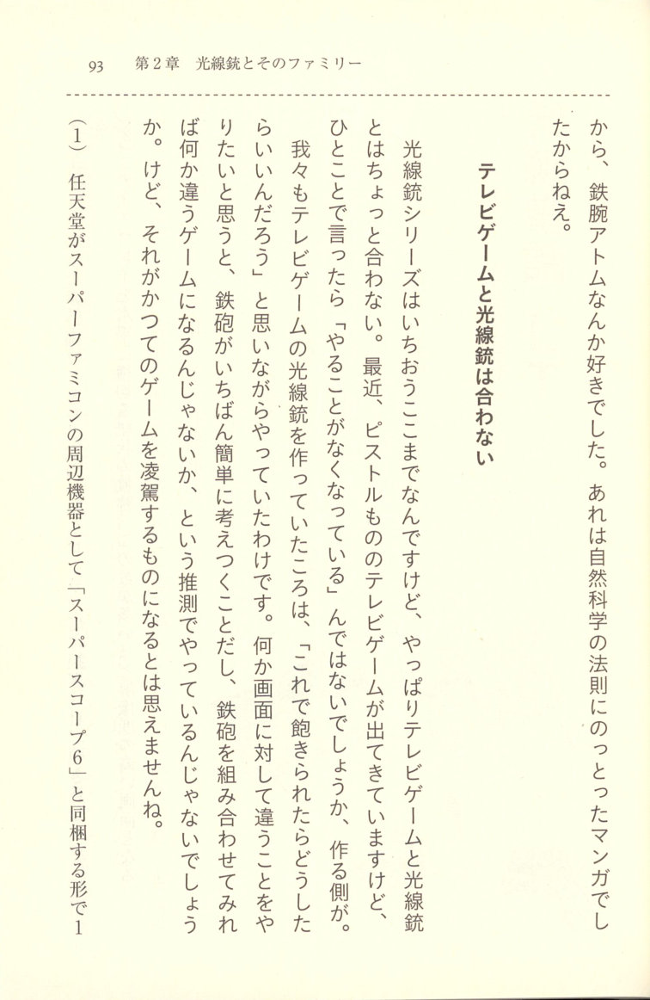
TV Games and the Light Gun Don't Mix
The light gun series and TV games are fundamentally incompatible. The latest thing now is pistol-type TV games, but TV games and light guns — they just don't really go together. Recently, people on the development side are saying things like "We're sick of this" or "What do we do next?" We at Nintendo were also making light gun games for TV — but we've reached a point where we can't really do it anymore. I think the people making them have gotten bored with them.
"I'd like to try doing something different with it," and "I think we should try combining a gun with the screen somehow," and so on — along those lines, my guess is it won't become a game, and I don't think a gun is the best fit for it either. But you know, I can't quite picture it ever becoming the kind of game it once was.
① Nintendo released the Super Scope 6 as a peripheral for the Super Famicom, bundled together in the same box —
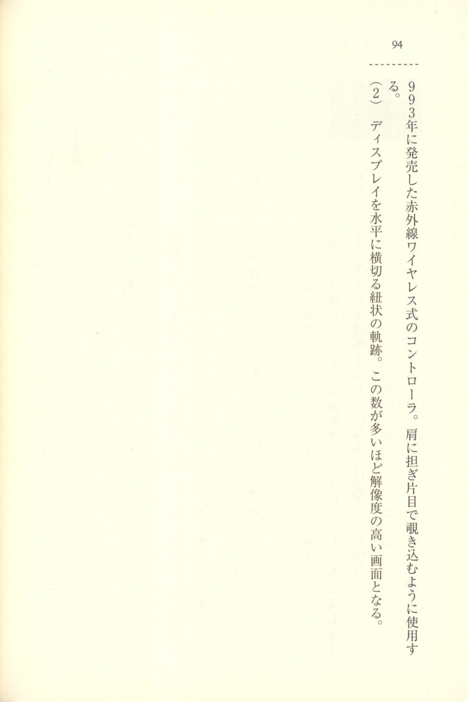
② The horizontal scan lines that cross the display. The greater their number, the higher the resolution of the image.
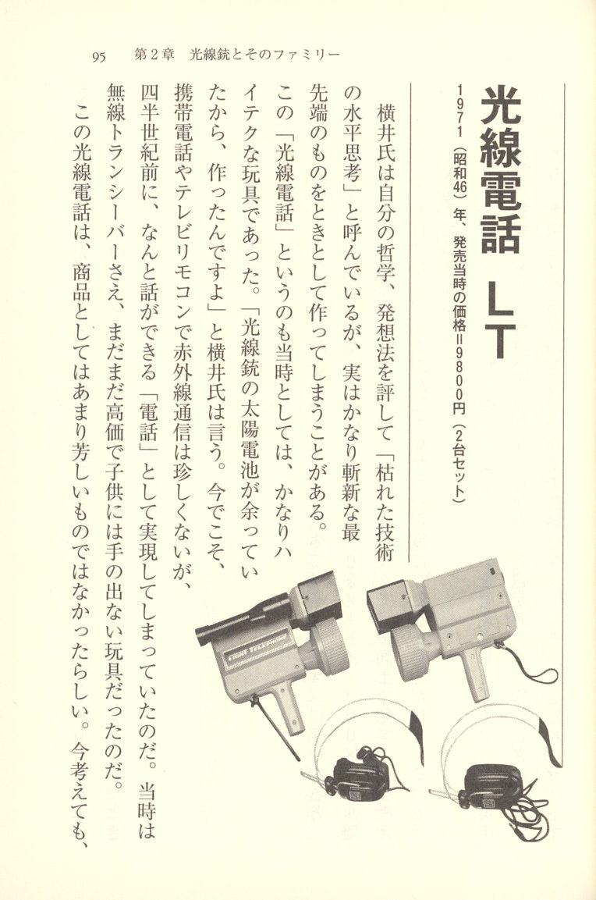
*1971 (Showa 46). Retail price at time of release: ¥9,800 (set of two)*
[IMAGE: Two handheld device units resembling the Light-Ray Telephone LT, shown with accessories including what appears to be a headset]
Yokoi applied his own philosophy — what he calls "withered-technology thinking" — to evaluate existing, mature technologies, and built something from them using the most cutting-edge technique he could find at the time. The result was quite innovative. He would sometimes push that approach so far that it produced things bordering on the outlandish.
This "Light-Ray Telephone," as it was called, is a prime example. In Yokoi's own words: "The solar battery in the light-ray gun had gone to waste, so I thought, why not make use of it? That's how this came about." At the time, it was a genuinely high-tech toy. Even today, infrared communication is hardly unusual — mobile phones and television remote controls can do it — but back then it was something children simply couldn't get their hands on. In fact, as a product, this Light-Ray Telephone apparently didn't sell particularly well. Even now, when you think about it,
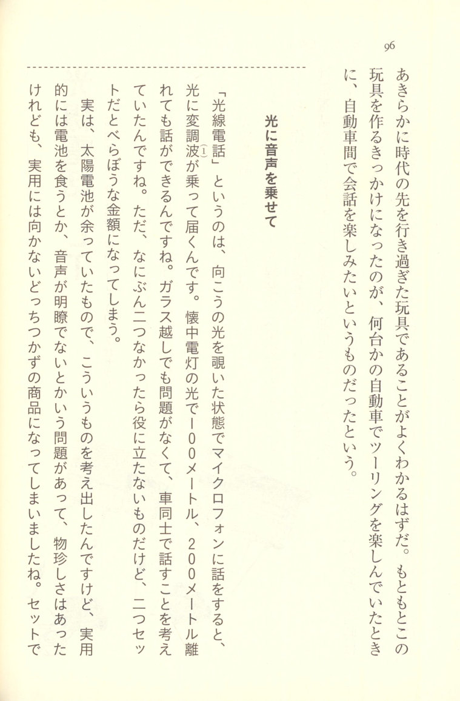
Riding a Voice on Light
"What the 'Light-Ray Telephone' does is this: you look directly at the light coming from the other unit and speak into the microphone, and your voice is modulated onto the light and transmitted. You can have a conversation through a glass window, at distances of 100, even 200 meters. The idea was that you wouldn't need to worry about it between cars — two sets, and you could talk car to car. But in practice, it was more or less useless. I came up with the concept, but the reality is that it eats through solar batteries, the sound quality isn't particularly clear, and all sorts of problems like that meant it ended up as a novelty at best. And since it came in a set, the price ran to a rather considerable amount. So although it had a certain charm as a curiosity, it was simply not practical — and the product never really took off, I'm afraid."
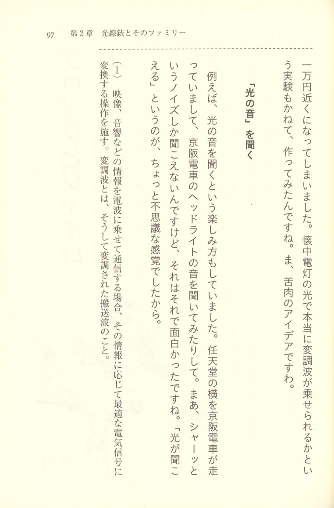
Listening to the "Sound of Light"
For instance, I was having fun listening to the sound of light. A Keihan train would pass alongside Nintendo, and I tried listening to the sound of its headlight. It was interesting in its own way — whoosh, and you'd hear it. "Light can be heard," so to speak — that's a rather strange sensation, isn't it. But all you could really pick up was noise from the Keihan line, so it wasn't exactly clear sound. Still, I found it fascinating.
(1) In the case of transmitting information such as video or audio by carrying it on radio waves, the process of converting that information into the optimal electrical signal is applied. A modulated wave refers to a carrier wave that has been modulated in this way.
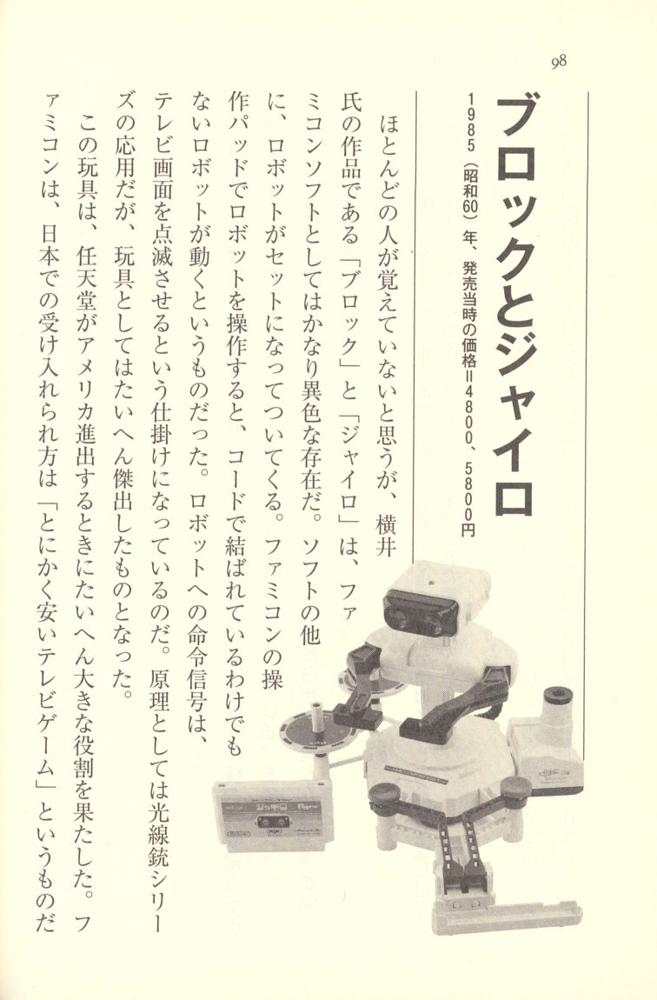
Block and Gyro
1985 (Showa 60). Price at time of release: ¥4,800 / ¥5,800
Most people probably don't remember them, but "Block" and "Gyro" are rather unusual works among Yokoi's creations — Famicom software unlike any other. As Famicom software, they came with a robot attached. The robot was connected by a cord, and even without using the pad to operate it, the robot would move on its own — that was the gimmick. In principle it was derived from the Zapper series, and the TV screen would flash, causing the toy robot to react. It was a remarkably clever piece of work. When Nintendo launched it in America, the Famicom's role there was enormously significant. How it was received in America was described as "an incredibly cheap TV game" —
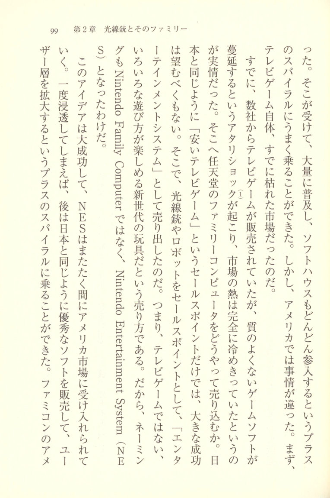
This idea was a great success, and NES was accepted into the American market in almost no time at all, just as in Japan, selling excellent software and riding the user-base spiral upward. Once it had thoroughly penetrated that market, just as in Japan, the American software houses were able to ride the Famicom spiral too.
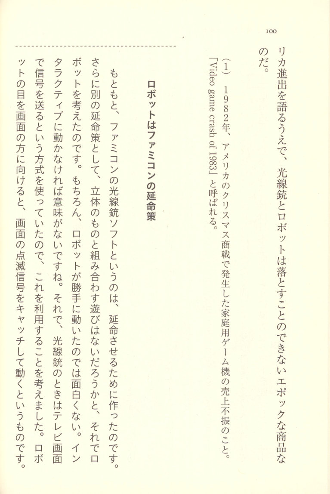
(1) In 1982, poor sales of home game consoles during the American Christmas season. Known as the "Video Game Crash of 1983."
The Robot as the Famicom's Life-Saving Strategy
To begin with, the light gun software for the Famicom was created in order to give the system a new lease on life — but would it really be fun to play without a robot to go with it? That was the thinking. Of course, a robot that just moves on its own isn't interesting. So, as an additional survival strategy, the idea was to combine it with three-dimensional objects. Robots are no fun if they just move by themselves; interactively, on the other hand, it becomes interesting. That's where the TV screen came in. By using a method in which the robot sends a signal toward the screen and catches the blinking signal from the screen, it can be made to move accordingly. That's how it works.